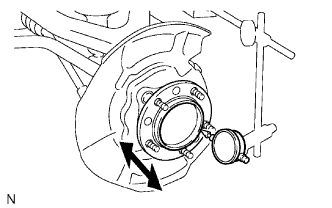
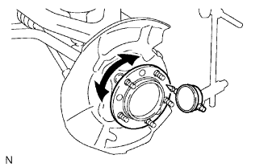

MOAYƠ CẦU TRƯỚC > KIỂM TRA TRÊN XE |
| 1. KIỂM TRA VÒNG BI MOAYƠ CẦU TRƯỚC |
|  |
Tháo bánh trước.
Tháo xi lanh phanh đĩa phía trước (Xem trang Kích chuột vào đây).
Tháo đĩa phanh trước.
Kiểm tra độ rơ moay ơ cầu xe.
Dùng đồng hồ so, kiểm tra độ rơ phía sau tâm của moayơ cầu xe.
|  |
Kiểm tra độ lệch moay ơ cầu xe.
Dùng đồng hồ so, kiểm tra độ lệch trên bề mặt của moay ơ cầu xe.